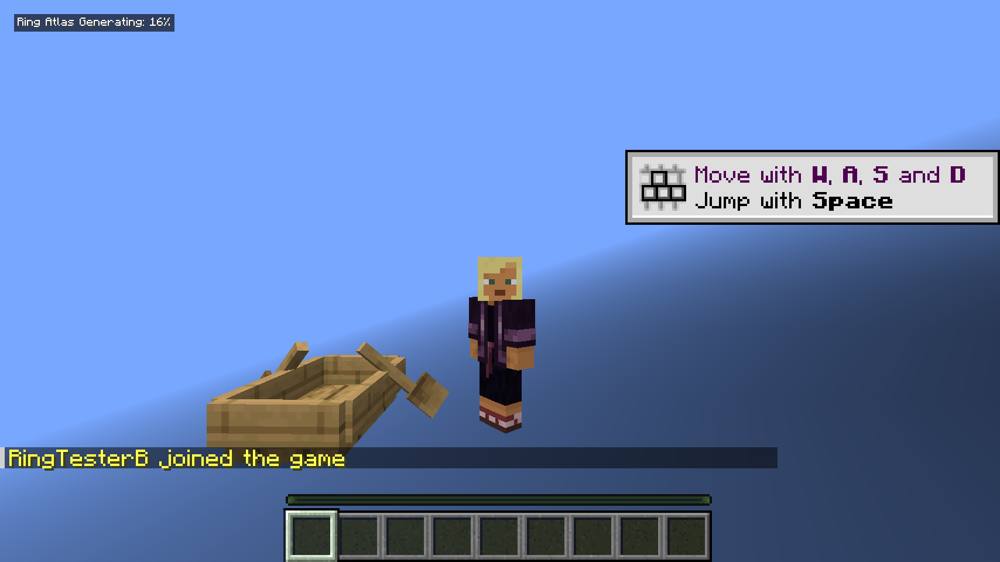
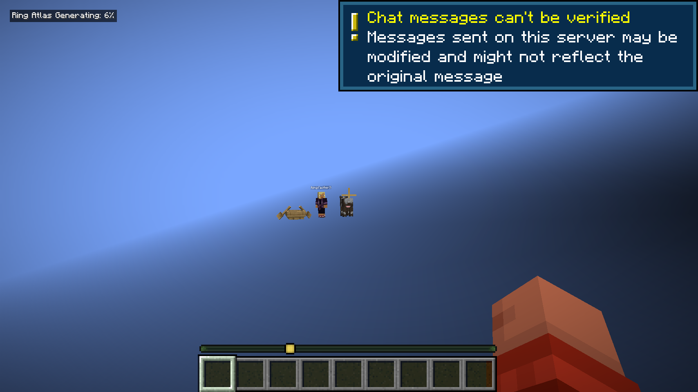
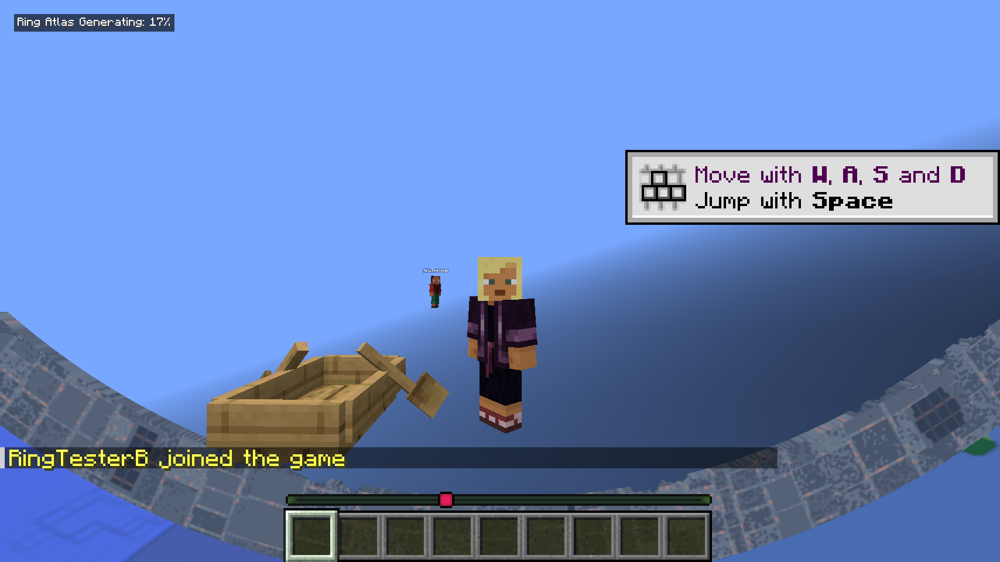
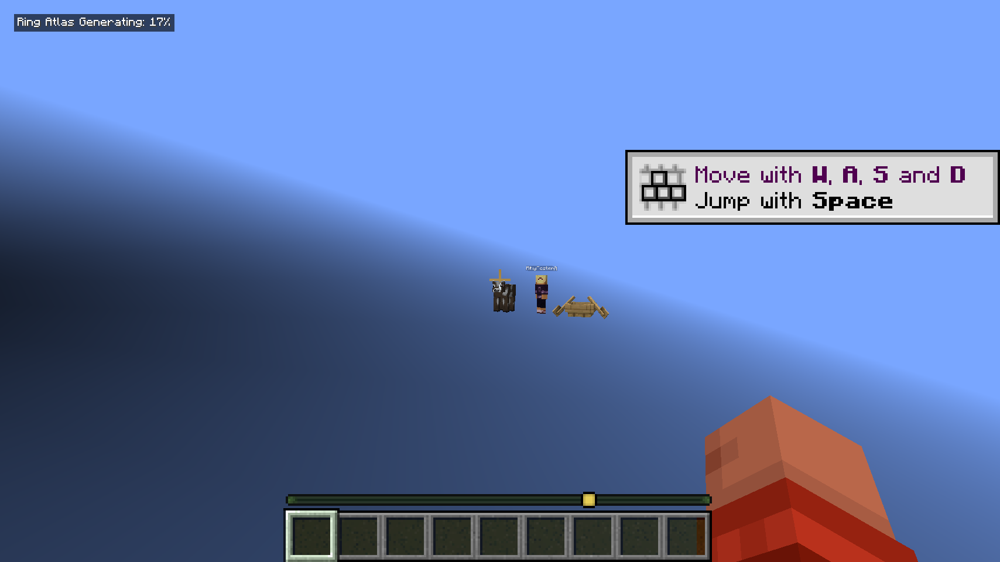
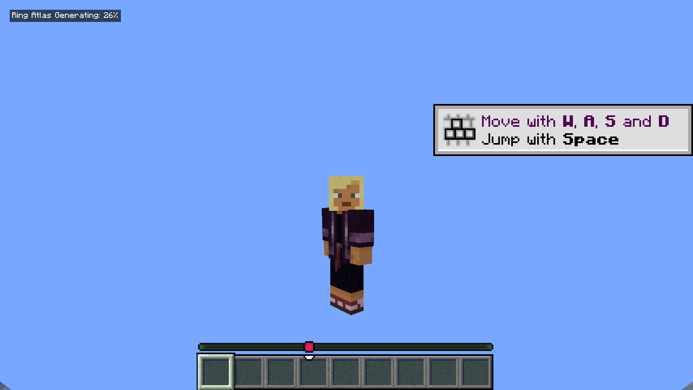

Native two-client test captures on a 2048 × 128 ring. Both boundaries are tested at Z = ±72.5, outside the playable width. The player, cow and boat render without sending exterior terrain chunks. Upper four images: 26.3 NeoForge. Final image: a falling player on 26.1.2 Fabric.
Implemented and tested; owner review and integration pending. Implementation and evidence




